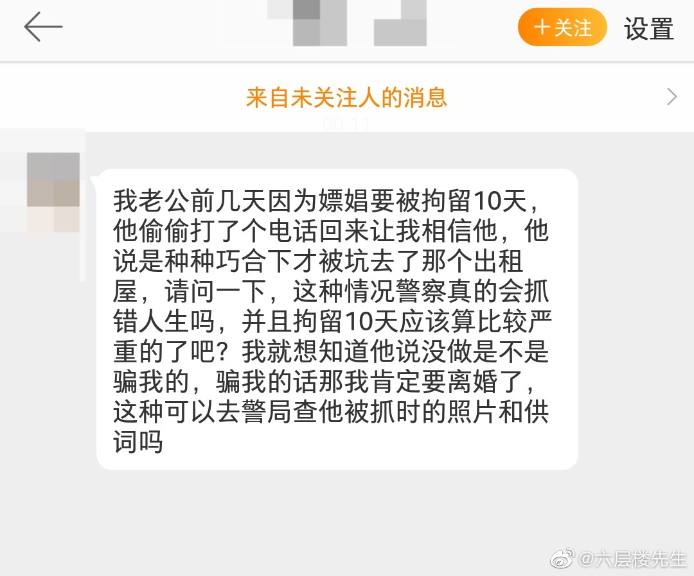

有些人的底线，对另一些人变成了美德。见过认为自己不吸烟就是顶级好老公的人。//@六层楼先生: 是的，这是我们每个普通成年人都应该做到的，遵纪守法是我们从小就应该知道的基本常识，这不是美德，而是底线。//@ :我是男生，今年26，我没嫖过。
@六层楼先生:
说来也是奇怪，我经常收到关于这类事件的咨询，但这明显超过了我的专业范畴，完全没资格给出确切的答案。
但是姑娘既然来问了，秉承着不辜负信任的原则，我试着说说我能想到的：
首先，要放在最开头的是，人的行为大多是有惯性的，所以不排除过去有过类似的行为，虽然存在各种偶然的可能性，也有可能就是孤立单发事件，但是保守起见，还是建议姑娘去进行全面的体检，重点查相关的传染 性 病原体，包括艾梅乙淋尖以及高危亚型HPV等，费用不高，结果出来的也很快……无论是真是假，无论欺骗与否，从我的专业角度来讲，都希望大家能守住「健康」这道底线。
这也算是从我个人角度真正在意的事情，剩下的内容只是试着说说我个人不成熟的看法。
其次，在现在的舆论环境下，医生，警察，老师等曾经被捧上去的行业都要经受更加严苛的审视，所以真正的从业者要小心再小心，虽然仍然有害群之马，但大多数人都是战战兢兢地坚持在自己的岗位上。所以警察对于案件的定性以及判罚等决定，很像医生在临床上给出的诊断，说实话，不是有十足的把握，通常是不敢贸然给出诊断的。
从这个角度来讲，我作为旁观者还是更倾向于相信警察对案件的判断，下面具体讲讲为啥？
主要让我更倾向相信警察的原因恰恰是这通「偷偷打的电话」，我们一起想想看，如果确实有机会打这个电话，甚至可能是唯一能打的电话，你会打给谁？
注意，在这样的情况下，在打给对象的选择上，主要取决于他内心对于真相的判断，如果他觉得自己是被冤枉的，或者抓错人了，这个时候最有可能打给能帮助自己洗脱嫌疑的人，或者打给身边人帮自己去寻找能协助洗脱嫌疑的人……而不是打给太太无条件相信他，完全没有给出任何可以相信他被抓错的理由（证明自己无辜要有明确的证据）。
或者换句话说，他在打给太太说出这番话的时候，已经在内心默认自己做的事情了，而且自己也知道警察并没有抓错人，这10天是肯定要待在里面了……这个时候唯一需要获得信任的人就是私信里的这位姑娘，怎么说呢，这其实是已经认罪伏法并开始进行「善后」了，这无形中也证明了他其实知道自己这样的行为最有可能伤害的人就是姑娘。
我们稍微脱离这件事情，问一个稍微深入的问题：我们在什么情况下会选择相信一个人？
篇幅有限，我直接说答案吧，选择相信一个人并不是听ta说了什么，而是看ta做了什么……那么回过头来看，他做了什么可以获得更多信任的行为吗？
无论是逻辑，还是策略，甚至思考都没有看到，至少我在私信里没看到。
最后，其实姑娘是不是选择相信都是您自己的答案，我们旁人无权干涉，也许您有无数个原谅并接受的理由，但任何选择都要权衡风险和收益。
我始终觉得所有问题都是智力问题，但我确实智力有限，只能想到这些，仅供参考，不求共识。
我是六层楼，我爱这个世界。
#老六瞎聊# #v光计划#
但是姑娘既然来问了，秉承着不辜负信任的原则，我试着说说我能想到的：
首先，要放在最开头的是，人的行为大多是有惯性的，所以不排除过去有过类似的行为，虽然存在各种偶然的可能性，也有可能就是孤立单发事件，但是保守起见，还是建议姑娘去进行全面的体检，重点查相关的传染 性 病原体，包括艾梅乙淋尖以及高危亚型HPV等，费用不高，结果出来的也很快……无论是真是假，无论欺骗与否，从我的专业角度来讲，都希望大家能守住「健康」这道底线。
这也算是从我个人角度真正在意的事情，剩下的内容只是试着说说我个人不成熟的看法。
其次，在现在的舆论环境下，医生，警察，老师等曾经被捧上去的行业都要经受更加严苛的审视，所以真正的从业者要小心再小心，虽然仍然有害群之马，但大多数人都是战战兢兢地坚持在自己的岗位上。所以警察对于案件的定性以及判罚等决定，很像医生在临床上给出的诊断，说实话，不是有十足的把握，通常是不敢贸然给出诊断的。
从这个角度来讲，我作为旁观者还是更倾向于相信警察对案件的判断，下面具体讲讲为啥？
主要让我更倾向相信警察的原因恰恰是这通「偷偷打的电话」，我们一起想想看，如果确实有机会打这个电话，甚至可能是唯一能打的电话，你会打给谁？
注意，在这样的情况下，在打给对象的选择上，主要取决于他内心对于真相的判断，如果他觉得自己是被冤枉的，或者抓错人了，这个时候最有可能打给能帮助自己洗脱嫌疑的人，或者打给身边人帮自己去寻找能协助洗脱嫌疑的人……而不是打给太太无条件相信他，完全没有给出任何可以相信他被抓错的理由（证明自己无辜要有明确的证据）。
或者换句话说，他在打给太太说出这番话的时候，已经在内心默认自己做的事情了，而且自己也知道警察并没有抓错人，这10天是肯定要待在里面了……这个时候唯一需要获得信任的人就是私信里的这位姑娘，怎么说呢，这其实是已经认罪伏法并开始进行「善后」了，这无形中也证明了他其实知道自己这样的行为最有可能伤害的人就是姑娘。
我们稍微脱离这件事情，问一个稍微深入的问题：我们在什么情况下会选择相信一个人？
篇幅有限，我直接说答案吧，选择相信一个人并不是听ta说了什么，而是看ta做了什么……那么回过头来看，他做了什么可以获得更多信任的行为吗？
无论是逻辑，还是策略，甚至思考都没有看到，至少我在私信里没看到。
最后，其实姑娘是不是选择相信都是您自己的答案，我们旁人无权干涉，也许您有无数个原谅并接受的理由，但任何选择都要权衡风险和收益。
我始终觉得所有问题都是智力问题，但我确实智力有限，只能想到这些，仅供参考，不求共识。
我是六层楼，我爱这个世界。
#老六瞎聊# #v光计划#
- 